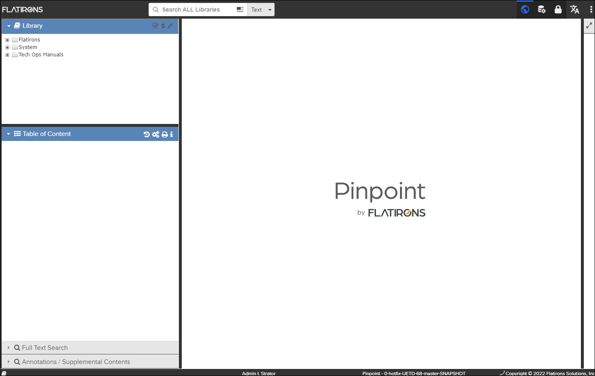
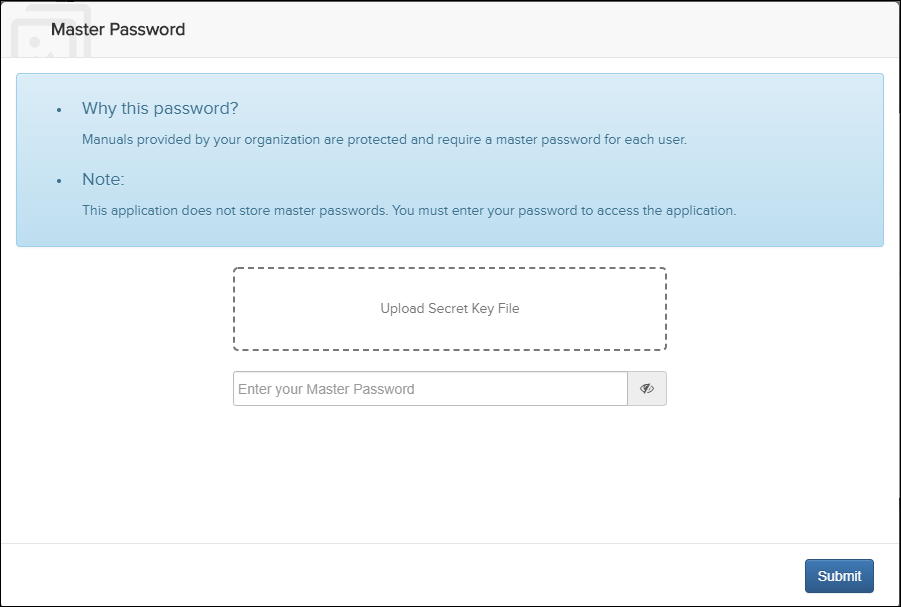
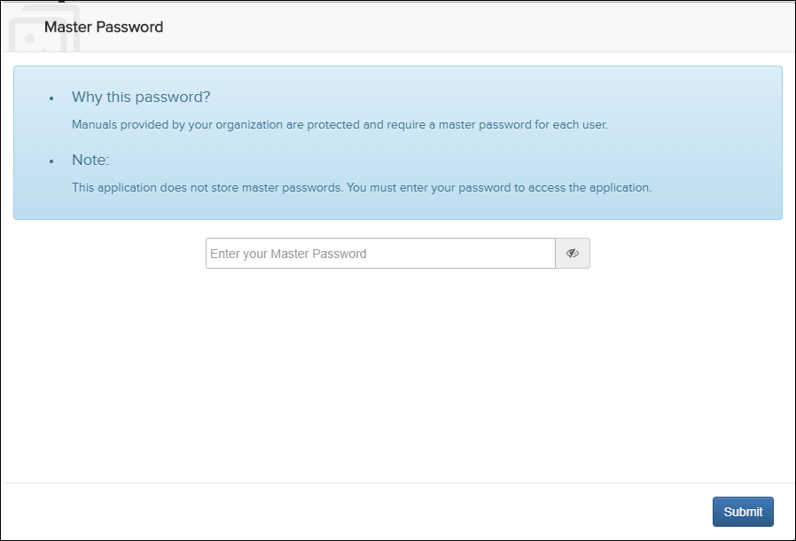

For security reasons, when initially starting the application, the person using the
browser is required to log in. Also, after periods of inactivity, the user is required
to log in to the browser.
Note: If the application is configured to allow guest access,
you can access the public, guest-accessible Pinpoint content without being required
to log in.
Note: For new username and password assistance, contact your
supervisor or administrator.
Do these steps:
-
Do one of these choices:
-
Not applicable for Pinpoint Standalone
Light. Click the CONTINUE AS GUEST
button.
If the environment also allows authenticated users, you can select from the
 More drop-down menu to log out of the public environment and
display the Access Control
login page.
More drop-down menu to log out of the public environment and
display the Access Control
login page.
-
Not applicable for Pinpoint Standalone
Light. Click the CONTINUE AS GUEST
button.
The application opens, showing the landing page in the Content pane. In the default configuration, the landing page is the Flatirons Logo, as shown in the graphic below, but this is configurable. Refer to Configuration Pane for information about changing the landing page.

Application Main Page
Not applicable for Pinpoint Standalone Light.
If your administrator configured your environment for data
encryption in the Pinpoint Standalone version, there are these
requirements:
- At first log in, you must upload a secret key file and enter your master
password. Note: Your administrator will provide your master password and the location of the secret key file.Note: Make note of this password. The application does not store passwords.This is the dialog that appears after you log in to Pinpoint Standalone:

- After your first log in to Pinpoint Standalone, you only need to enter your
master password.Note: The prompt only appears once for the master password for that standalone instance even if you log back in. If you restart Pinpoint Standalone, the prompt appears, and you must log in again.This is the dialog that appears on subsequent log ins:
